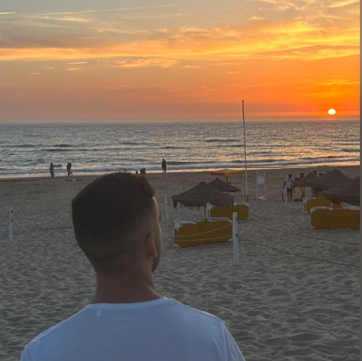

Sobre o Projeto
O Projeto Integrador INS é uma iniciativa académica interdisciplinar que transforma conhecimento teórico em soluções práticas. A plataforma permite ingestão, análise e visualização de ficheiros PDF de forma intuitiva, eficiente e acessível.
Cartão com conteúdo alternável sobre a missão do projeto.
Cartão com conteúdo alternável sobre a visão do projeto.
⚙️ Funcionalidades
- 📥 Upload e processamento inteligente de ficheiros PDF
- 🌓 Interface moderna com suporte a modo claro e escuro
- 🕓 Histórico de documentos ingeridos
- 🧠 Simulação de análise semântica com retorno visual
- 📊 Exportação de resultados estruturados (Excel)
- 🔐 Acesso autenticado com área de perfil
💻 Tecnologias Utilizadas
Foco em desempenho, escalabilidade e experiência do utilizador:
- React e Tailwind CSS (Frontend)
- Node.js e Express (API)
- MySQL (Base de dados relacional)
- Ollama + LLM Mistral (Processamento semântico)
- Docker e Docker Compose (Orquestração de contentores)
👥 Nossa Equipa

Rodrigo Vicente
Desenvolvedor Front-End
Interface, responsividade e experiência do utilizador.
João Custódio
Desenvolvedor Front-End
Funcionalidades visuais, Acessibilidade e temas.
Tomás Ribalonga
Desenvolvedor Full Stack
Arquitetura e Integração front/back-end.
Bernardo Granadas
Desenvolvedor Back-End
Servidor, Processamento de PDFs e Exportação.